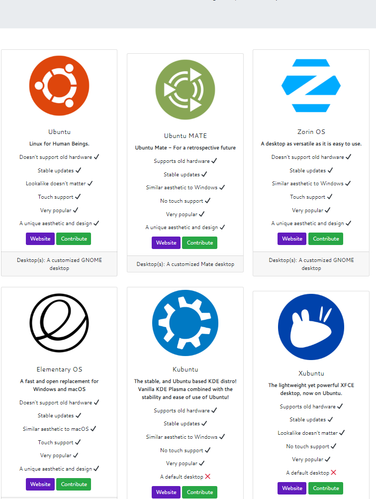
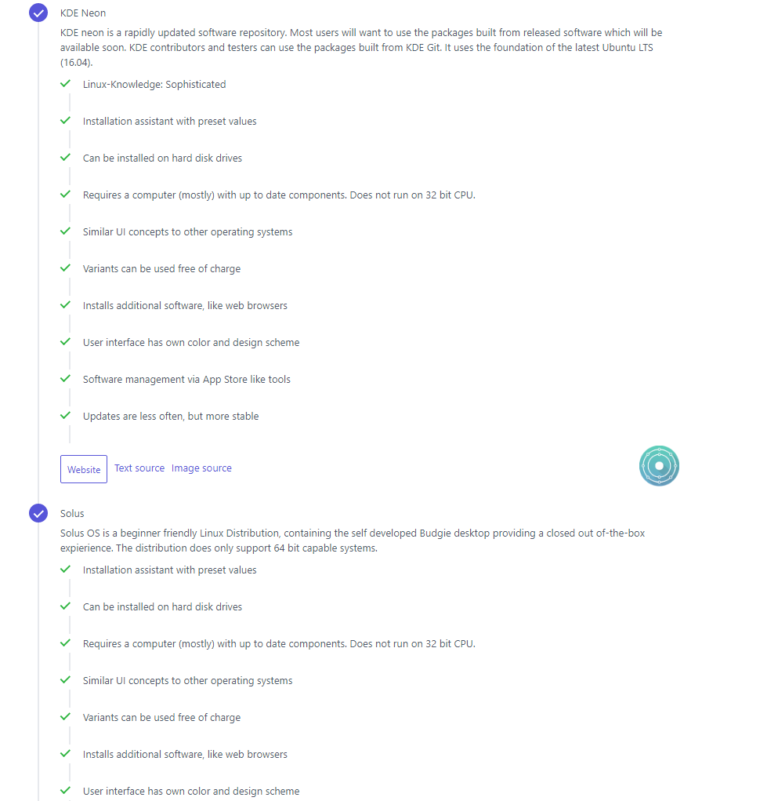

Tehtävä 1.1
A)
Jakelupaketin valinnassa kannattaa kiinnittää mikrobitin artikkelin mukaan huomiota, mitä ominaisuuksia haluat käyttöjärjestelmältäsi. Jakeluja on olemassa moniin eri tarkoituksiin ja se mihin haluat käyttöjärjestelmääsi käyttää rajoittaa paljon jakeluita. Käyttöliittymä on tärkeä ensimmäinen askel. Tunnetuimmat niistä ovat GNOME ja KDE, Gnome on aloittelijaystävällisempi ja varmasti monelle tutumman oloinen, kun taas KDA, on muokattavampi ja sopivampi osaavammalle käyttäjälle. Myös pitää kiinnittää huomiota, haluaako päivityksen stabiilina pakettina tietyn ajan välein vai haluaako uusimmat ominaisuudet, heti kun ne ovat valmiita julkaistavaksi. Jos haluaa Linuxillaan pelata videopelejä, kannattaa varmistaa, että valitsemallasi julkaisulla on siihen tuki. Esimerkkinä eri tarkoituksiin luoduista julkaisuista on Kali, joka on tehty pääasiassa tietoturva ja penetraatiotestaamista varten.
Tehtävä 1.1
B)
Librehuntin testissä vastasin, että olen aloittelija, en tarvitse vanhan raudan tukea, päivitykset tavanomaiseen tapaan, ulkoasun ei tarvitse muistuttaa macOS tai Windows, en tarvitse kosketusnäytön tukea, haluan suositun julkaisun ja haluan uniikin ulkoasun. Kuvassa on testin suositukset minulle.

Julkaisut ovat pääasiassa melko suosittuja distrowatchin perusteella ja monen ulkoasu muistuttaa Windowsia, vaikka vastasin, että sillä ei ole väliä. Uskon, että nämä ovat todella osuvia minulle, jos haluaisin vaihtaa Linuxin päivittäiseksi käyttäjäksi.
Toisen testin top 5 oli KDE Neon, Solus, Ubuntu GNOME, Kubuntu ja Manjaro. Listalla on myös monia samoja, joita oli ensimmäisessä testissä. Uskoisin, että ubuntu, kubuntu tai elementary olisivat minulle osuvimmat jakelut testien perusteella. Toisesta testistä on vaikeaa saada kuvakaappausta, mutta tässä on kaksi ensimmäistä vastausta.

Tehtävä 1.1
D)
Tässä artikkelissa puhutaan Amazonin julkaisemasta Bottlerocket-käyttöjärjestelmästä, jota he kuvailevat pelkistetyksin Linux-jakeluksi. Käyttöjärjestelmä on kuitenkin luotu vain palvelinpuolen toimintoihin. Kyseisen järjestelmän päällä voi ajaa mitä tahansa Linux-pohjaisia konttiratkaisuja, koska siitä on kaikki ylimääräinen otettu pois. Bottlerocket on kehitysvaiheessa, mutta testaaminen on aloitettu.